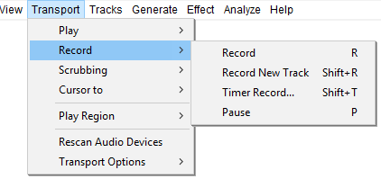

Transport Menu: Record
You can either start a recording on your existing track or an a new track.
There is also a Timer Record function to enable you to make unattended timed recordings.
- Click, or hover, on any menu item in the image to read about that command. Skip the image
- 
Record R
Clicking Record or using the R shortcut always begins recording at the end of the currently selected track(s).
Record New Track Shift + R
This will cause Audacity to create a new track and begin recording on that track from the current cursor position (or from the left edge of a region on the Timeline).
Starts recording at the end of the currently selected track(s). Append Record can also be started by holding Shift while clicking the Record button in Transport Toolbar. When you hold down the Shift key the Record button will change to the Record New Track  button.
button.
Timer Record... Shift + T
Brings up the Timer Record setup dialog for scheduling when a recording ends and optionally, when it begins. Pressing "OK" starts the process of recording, or waiting for the recording to start.
For full details of the timer recording function please see the Timer Record page.
Pause P
Temporarily pauses playing or recording without losing your place. Same as clicking the Pause button  in Transport Toolbar.
in Transport Toolbar.